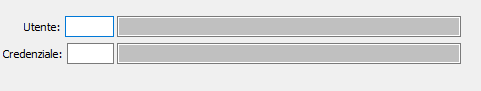

La tabella consente di configurare, per ogni utente di OS1, le credenziali da utilizzare per l'accesso al servizio Open banking; se l'utente di OS1 non è presente in questa tabella non sarà possibile accedere alle procedure specifiche relative all'Open banking.